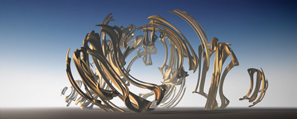

Kent Oberheu
graphic fine art
NOTES
Kent Oberheu graduated in 1990 with a BFA in visual communication from the University of Kansas, then practiced commercial design in St.Louis. He returned to the University of Kansas in 1998 to teach graphic design in the School of Fine Arts. In late 1999 he and his wife moved to Berkeley, California, where he currently works as artist and software interface designer. In his art, Kent employs photography, fractals and 3-D software. He writes, "Traditional media has limitations imposed by the nature of its physical makeup. Data does not have this limitation... Working in the digital domain an artist can reference, manipulate, or generate information to create imagery in ways not practical in traditional media... the ultimate goal of which is to produce work uncompromising in scope, balanced in presentation, and engaging to both the casual and studious observer."
Elephant bones
|
 |